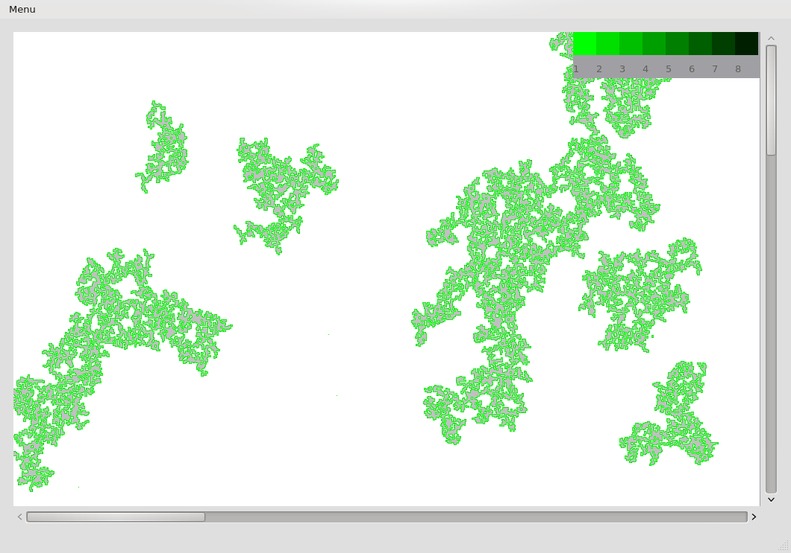
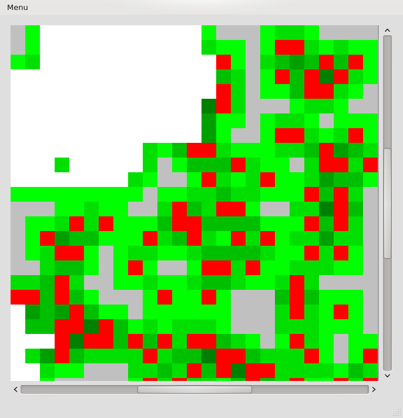
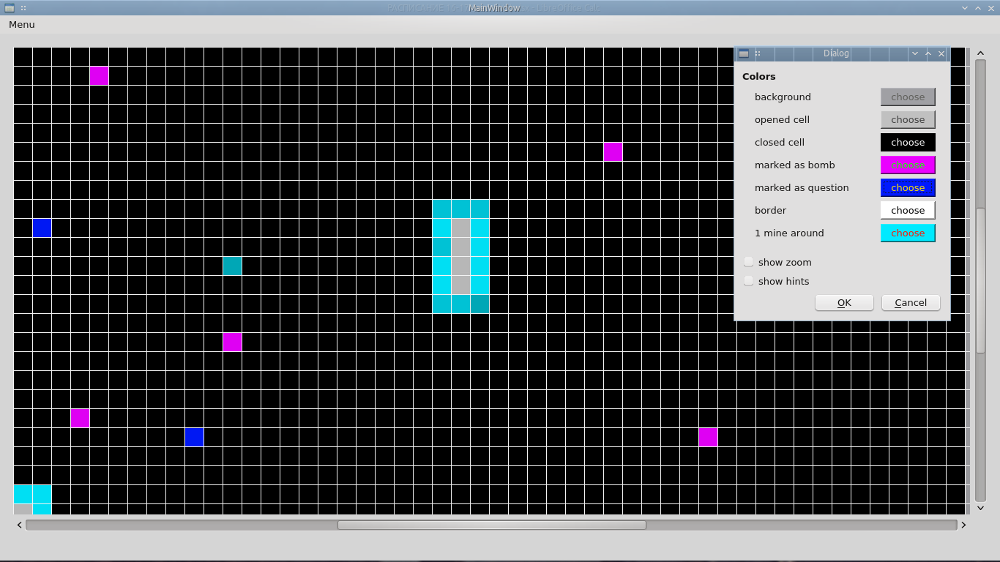
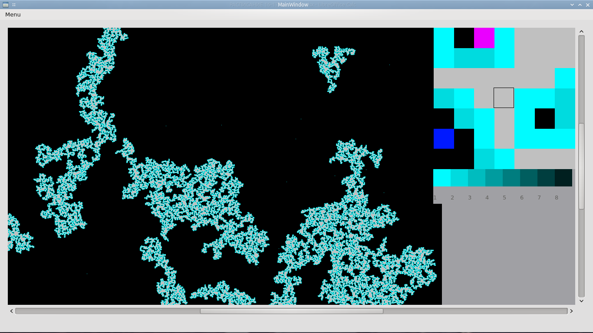
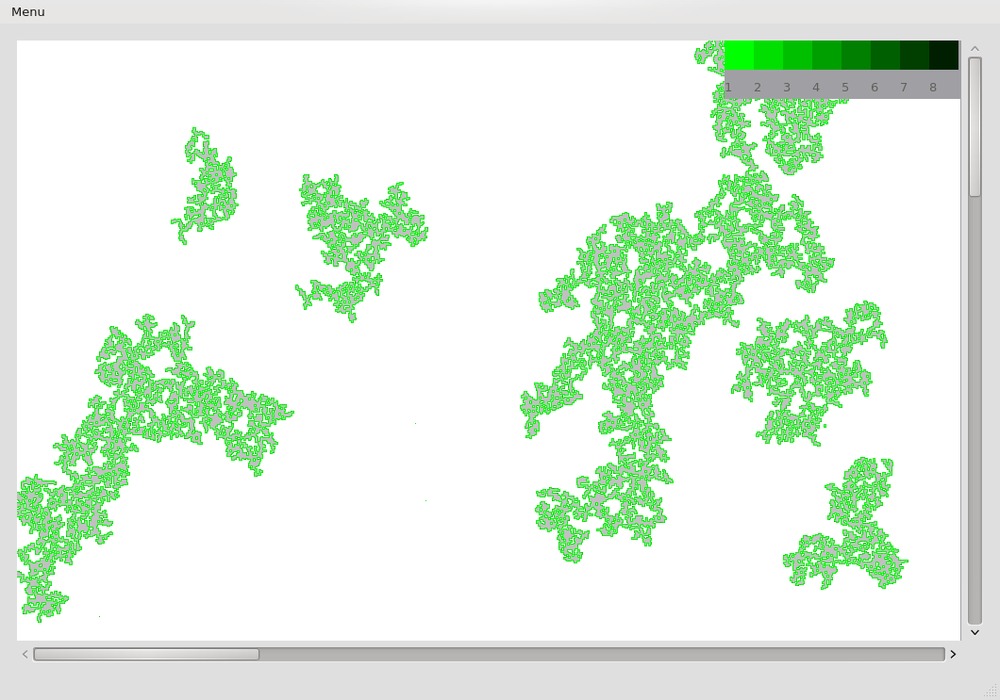
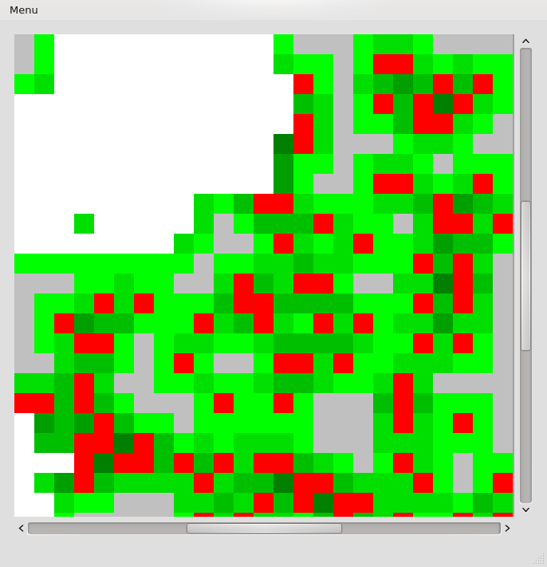
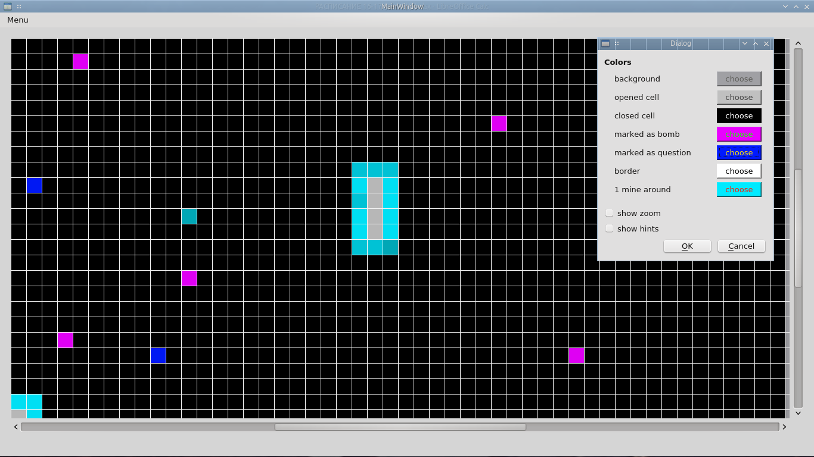
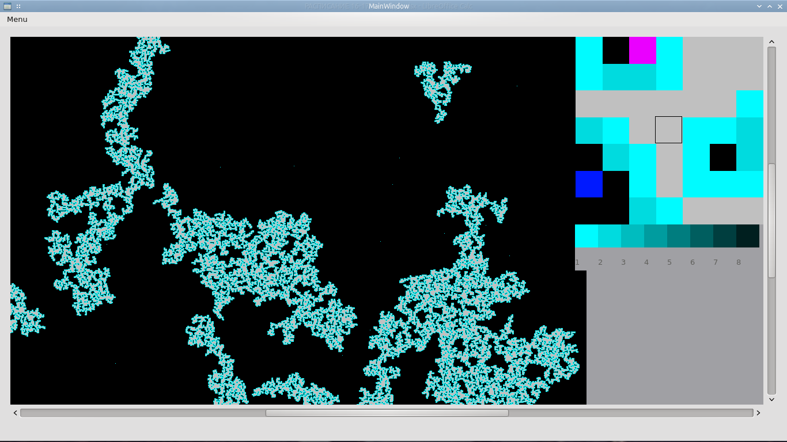

{kind=link}

 







Вы когда-нибудь играли в сапёра с полем 1000x1000? Теперь вы можете! Но не только это отличает мою игру от классического сапёра из Windows. Основная фишка - использование разных оттенков цвета(по дефолту зелёного) для определения количества мин вокруг ячейки, светло зелёный - 1 мина, чуть темнее - 2 и всё в таком духе.
Как в это играть, резонно спросите Вы? Точно так же, как в обычный сапёр!
Напомню, в оригинальной реализации цифры показывают, сколько мин находится вокруг ячейки, зная эту информацию, можно определять где эти самые мины находятся, отмечая их кликом правой кнопкой мыши. Например, если в данной ячейке цифра 1 и вокруг неё только одна закрытая, то, очевидно, мина там. Здесь всё тоже самое. Найдя мину, нажмите ПКМ по ячейке, её цвет станет красным - это значит что ячейка отмечена, если нажать ещё раз ячейка станет жёлтой - это значит, что неизвестно, если ли там мина, в будущем я планирую добавить подсказки, которые будут позволять определить мину в тех случаях, когда это не может сделать игрок.
Игра завершается успешно, когда отмечены все ячейки с минами и открыты все ячейки без мин. Если вы попытаетесь открыть ячейку с миной, вы проиграете :(
Если вы по какой-то причине не любите зелёный цвет, вы всегда можете изменить его в настройках, так же как и цвет фона, границы, отмеченной ячейки и всего остального.
Также в игре присутствует возможность управления с помощью клавиатуры. Для передвижения курсора по ячейкам используйте клавиши WASD, для того, чтобы отметить мину - E, для того, чтобы открыть ячейку - Q, для того, чтобы открыть ячейки рядом с пустой - Tab(сработает только, если вокруг данной ячейки правильно отмечены мины, в противном случае вы проиграете).
Удачной игры!
{kind=link}
{kind=link}
{kind=link}
{kind=link}